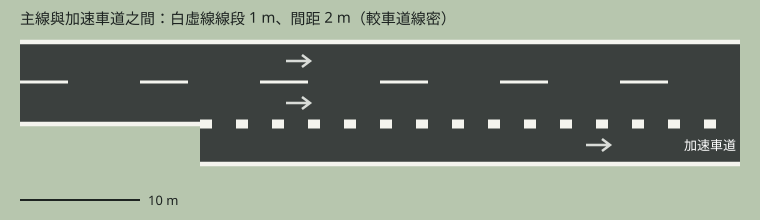

穿越虛線 第189條之1
車輛匯入或匯出時，用以劃分主線車道與其他車道；其他車道的車輛應讓主線車道車輛先行。

規格
| 類別 | 指示標線 |
|---|---|
| 顏色 | 白 |
| 線型 | 虛線（密） |
| 尺寸 | 白虛線，線寬 15 或 30 公分，線段 1 公尺、間距 2 公尺。 |
意義
車輛匯入或匯出時，用以劃分主線車道與其他車道；其他車道的車輛應讓主線車道車輛先行。
設置地點
匯入、匯出路段，例如交流道加速車道、減速車道與主線之間。（例子為整理說明）
跨越或通行
其他車道車輛應讓主線車道車輛先行。
常見誤解
- 國道系統交流道門架照片中主線與分流車道之間的「密集短虛線」就是這種線，不是一般車道線。
出處
道路交通標誌標線號誌設置規則（民國115年03月11日修正）第189條之1。全國法規資料庫原文
本頁為條文整理，用字以原文為準；標「整理說明」者為本站補充。最後更新：2026-11-13